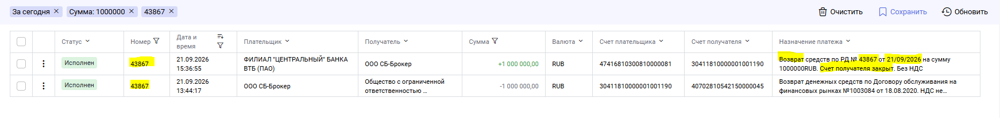
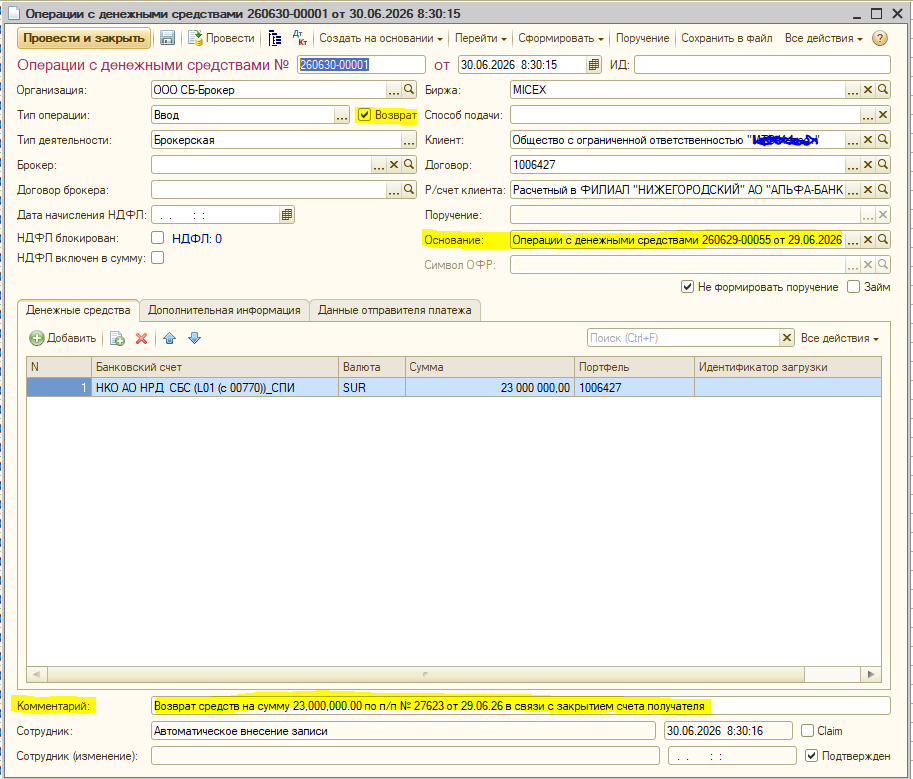

| Письмо | Кузьмина Арина, 21.09.2026 17:16. Тема: возврат ДС по выводам на р/с клиентам не работает |
| Кейс | Возврат ДС по действующему ДОФР, причина банка - счет получателя закрыт |
| Сломалось | Операция с ДС 260921-00076, 1 000 000 SUR, договор НЕВЫЯСНЕННЫЕ/ОШИБОЧНЫЕ ПЛАТЕЖИ БПИ |
| Эталон | Операция 260630-00001 от 30.06.2026, 23 000 000 SUR, договор 1006427, флажок «Возврат ДС» |
| Точка входа | Обработка ОбработкаРеестровНРДAPIРКО, процедура СформироватьВводДС |
1. Ситуация
Регламент загрузки реестров НРД (API РКО) создает документ «Операции с денежными средствами» с типом Ввод. Если это банковский возврат вывода на р/с клиента, должен сработать сценарий ACCOUNTING-10214: флажок Возврат ДС, основание = исходный вывод, дальше этапы сами делают Перевод ДС и платежное поручение.
Сегодня входящее зачисление от ВТБ на счет НРД 30411810000001001190 легло на невыясненные. Робот прислал письмо «Невыясненный платеж!» по операции 260921-00076.
21.09.2026 - не сработало
Банк-клиент, п/п 43867, сумма 1 000 000. Номер списания и возврата совпадает.
В 1С: договор и клиент «НЕВЫЯСНЕННЫЕ/ОШИБОЧНЫЕ ПЛАТЕЖИ БПИ», портфель «Основной портфель».
30.06.2026 - эталон
Банк-клиент, п/п 27623, сумма 23 000 000. Документ 260630-00001.
В 1С: флажок «Возврат», основание 260629-00055, договор и портфель 1006427, клиент МТС-Инвест.


2. Сравнение назначений
Тестовые XML задачи 10214 - тот же шаблон ВТБ, что и сегодня. Разница только в записи суммы.
| Источник | Фрагмент суммы в назначении | Семь цифр подряд | Ветка возврата |
|---|---|---|---|
| Тест 10214, XML НРД | на сумму 81.60RUB / 73.85RUB |
Нет: точка рвет цифры | Включается |
| Эталон 30.06.2026, Альфа-Банк | на сумму 23,000,000.00 |
Нет: запятые рвут цифры | Включается |
| Инцидент 21.09.2026, ВТБ | на сумму 1000000RUB |
Да: 1000000, затем буквы RUB | Не включается |
43867 - верно.
До этого разбора выполнение не доходит.
3. Причина
Автовозврат включается только если из назначения не извлекли номер договора (ровно семь цифр подряд) и текст начинается со слова «Возврат». Порядок сейчас такой:
Ищем 7 цифр
НомерДоговораИзНазначенияПлатежа. Сегодня находит 1000000.
Это не возврат
Номер договора не пустой. ЭтоВозвратДС = Ложь. Ветка 10214 пропускается.
Клиента нет
Контрагент с кодом 1000000 не находится. Данные вывода не подставляются.
Невыясненные
НовыйВводДС заполняет договор по умолчанию и шлет «Невыясненный платеж!».
1000000RUB без пробелов и запятых совпадает по длине с номером ДОФР (7 цифр).
Функция поиска договора не отличает сумму платежа от номера договора.
В тестах 10214 такого формата суммы не было, поэтому дефект не поймали.
Связанная задача ACCOUNTING-15493 закрывала другой случай: номер п/п в файле НРД не совпадал с номером вывода
(в назначении 163276, в файле 14475). Тогда добавили запасной поиск вывода по цифрам из назначения.
Сегодня этот код не запускается: он живет внутри ДополнитьДанныеДляЗаполненияПоВозврату, а туда мы не заходим.
4. Где в коде
| Что | Объект | Процедура / функция |
|---|---|---|
| Точка входа, развилка «обычный ввод / возврат» | Обработка ОбработкаРеестровНРДAPIРКО, модуль объекта |
СформироватьВводДС |
| Семь цифр = номер договора | Общий модуль РаботаСПоручениямиПовтИсп |
НомерДоговораИзНазначенияПлатежа |
| Заполнение ввода-возврата, флаг и основание | Та же обработка | ДополнитьДанныеДляЗаполненияПоВозврату |
| Поиск исходного вывода | РС ОперацииПоВыплатеДохода, модуль менеджера |
ДанныеВыводаДСПоСуммеИНомеруПоручения |
| Номер п/п из текста (доработка 15493) | РаботаСПоручениямиПовтИсп |
НомерПлатежногоПорученияИзНазначенияПлатежа |
| Создание документа и письмо робота | Документ ОперацииДС, модуль менеджера |
НовыйВводДС |
Развилка, которая сегодня уводит мимо возврата
// ОбработкаРеестровНРДAPIРКО, СформироватьВводДС НомерДоговора = РаботаСПоручениямиПовтИсп.НомерДоговораИзНазначенияПлатежа(СтрокаДанных.НазначениеПлатежа); Если ПустаяСтрока(НомерДоговора) Тогда ЭтоВозвратДС = СтрНайти(СтрокаДанных.НазначениеПлатежа, "Возврат") = 1; // ... ЗаполнитьДаннымиПоУмолчанию = Истина Иначе ЭтоВозвратДС = Ложь; // <- сегодня сюда: договор = "1000000" ЗаполнитьДаннымиПоУмолчанию = Ложь; КонецЕсли; Если ЗаполнитьДаннымиПоУмолчанию Тогда Если ЭтоВозвратДС Тогда ДополнитьДанныеДляЗаполненияПоВозврату(СтрокаДанных, ДанныеДляЗаполнения); КонецЕсли; // ... НовыйВводДС КонецЕсли;
Почему 1000000 становится договором
// РаботаСПоручениямиПовтИсп.НомерДоговораИзНазначенияПлатежа // Ищет в строке ровно 7 цифр подряд Если СтрДлина(НомерДоговора) = 7 Тогда Возврат НомерДоговора; КонецЕсли; // "на сумму 1000000RUB" -> 1000000 (7 цифр, дальше буква R) // "на сумму 81.60RUB" -> нет семи цифр (точка) // "23,000,000.00" -> нет семи цифр (запятые)
Куда должны были зайти
// ДополнитьДанныеДляЗаполненияПоВозврату // 1) поиск вывода по сумме и НомерПП из файла НРД // 2) если не нашли - первая группа цифр из назначения (15493), для сегодня это 43867 ДанныеДляЗаполнения.Вставить("ВозвратДС", Истина); ДанныеДляЗаполнения.Вставить("Основание", РеквизитыВыводаДС.ВыводДС);
5. Как исправить
В СформироватьВводДС поменять порядок:
// Было: сначала 7 цифр, и только если пусто - смотрим "Возврат" // Надо: сначала "Возврат", договор из назначения для возврата не используем ЭтоВозвратДС = СтрНайти(СтрокаДанных.НазначениеПлатежа, "Возврат") = 1; Если ЭтоВозвратДС Тогда НомерДоговора = ""; ЗаполнитьДаннымиПоУмолчанию = Истина; Уведомить("Получен возврат от банка получателя!"); Иначе НомерДоговора = РаботаСПоручениямиПовтИсп.НомерДоговораИзНазначенияПлатежа(СтрокаДанных.НазначениеПлатежа); ЗаполнитьДаннымиПоУмолчанию = ПустаяСтрока(НомерДоговора); Если ЗаполнитьДаннымиПоУмолчанию Тогда Уведомить("Не удалось определить номер договора по назначению платежа!"); КонецЕсли; КонецЕсли;
Дальше существующие ДополнитьДанныеДляЗаполненияПоВозврату и запасной поиск 15493 отработают сами: вывода ищут по сумме и номеру п/п, договор берут из найденного вывода, а не из семи цифр суммы.
Запасной вариант, если менять развилку нельзя
В НомерДоговораИзНазначенияПлатежа не возвращать семь цифр, если сразу после них идет валюта (RUB, SUR, USD) или фрагмент на сумму.
Это уже, хуже читается, не закрывает другие ложные семерки в тексте банка.
Минимальный набор регресса
- Назначение как сегодня:
на сумму 1000000RUB- должен создаться ввод с флажком «Возврат ДС» и основанием на вывод 43867, договор 1003084. - Тестовые XML 10214:
81.60RUB/73.85RUB- действующий и закрытый договор как раньше. - Эталон июня:
23,000,000.00- без регресса. - Кейс 15493: в файле НРД один номер п/п, в назначении другой - запасной поиск по цифрам из текста все еще работает.
- Обычный ввод с настоящим номером ДОФР из семи цифр в назначении - по-прежнему находится договор, это не возврат.
6. Что проверить в базе
- Документ
260921-00076: флажок «Возврат ДС» снят, основание пустое, договор невыясненных - это следствие, не отдельный сбой. - Исходный вывод по п/п 43867 на 1 000 000 (ДОФР 1003084, действующий): он должен был стать основанием.
- РС «Операции по выплате дохода» по этому выводу: тип Вывод, сумма,
НомерПП. - Сравнить с эталоном
260630-00001/ основанием260629-00055.